Actualización de solicitudes débito
Mediante esta opción se ingresan en el sistema las solicitudes de productos débito correspondientes a Reposición , Renovación y Reexpedición.
Al ingresar a la opción se despliega un formulario inicial en el cual se solicita al usuario digitar los datos de identificación del cliente para quien se desea ingresar la solicitud.
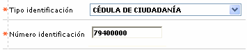
Descripción de campos
|
Tipo identificación |
Campo tipo combo en el cual se puede seleccionar el tipo de documento de identificación asociado con el cliente a quien se desea ingresar la solicitud. |
|
Número identificación |
En este campo alfanumérico de hasta 16 caracteres, obligatorio, se registra el número de identificación del cliente. |
Una vez ingresada la información se despliega un formulario que contiene la información de todas las solicitudes de productos débito que tenga el cliente. Si no existen solicitudes a mostrar el formulario se despliega en blanco.
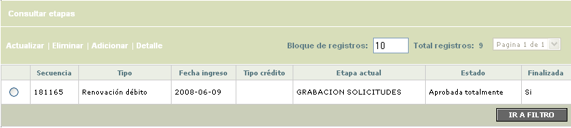
El formulario contiene el hipervínculo Consultar etapas, que permite ver el histórico de las etapas por las que ha pasado la solicitud. Adicionalmente contiene los enlaces: Actualizar, Eliminar, Adicionar y Detalle.
Adicionar: Al activar ese enlace, se despliega un nuevo formulario con los siguientes campos.
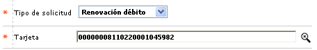
Descripción de campos
|
Tipo de solicitud |
Campo obligatorio tipo combo en el cual se puede seleccionar entre Renovación débito, Reposición débito y Reexpedición débito el tipo de solicitud a ingresar. |
|
Tarjeta |
En este campo obligatorio con lista de valores, se selecciona la tarjeta débito del cliente para la cual se desea ingresar la solicitud. |
Una vez hechas las validaciones respectivas y dependiendo si el tipo de solicitud seleccionada, el sistema despliega un wizard de dos pasos en el que se registran los datos requeridos.
Reposición débito : si el tipo de solicitud seleccionada por el usuario es Reposición débito, la primera página del wizard contiene los siguientes campos.
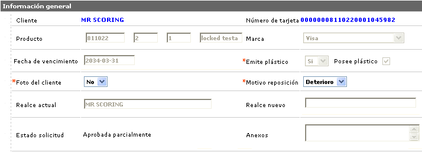
Descripción de campos
|
Cliente |
Campos en los cuales se muestra el nombre del cliente. |
|
Número de tarjeta |
Campo de salida que muestra el número de tarjeta para la cual se ingresa la solicitud |
|
Producto |
Este campo de salida muestra el bin, producto, grupo de afinidad y descripción del producto débito al que pertenece la tarjeta. |
|
Marca |
Campo de salida que despliega la marca a la que pertenece la tarjeta. |
|
Fecha de vencimiento |
En este campo de salida se muestra en formato YYYY-MM-DD la fecha de vencimiento actual de la tarjeta. |
|
Emite plástico |
Campo de salida que indica Si para el producto solicitado debe emitir un plástico como materialización de la tarjeta. |
|
Posee plástico |
En este campo de salida se indica Si, la tarjeta actual tiene un plástico emitido. |
|
Foto cliente |
Campo obligatorio tipo combo en el cual se puede seleccionar entre Si o No el plástico de la tarjeta debe llevar impresa la foto del cliente. |
|
Motivo reposición |
En este campo obligatorio tipo combo se selecciona entre Nombre, Banda o Deterioro el motivo por el cual se hace la solicitud de reposición. El valor aquí indicado será tenido en cuenta por el sistema para evaluar de acuerdo con lo parametrizado para el producto si se debe generar cobro al cliente por la solicitud de reposición. |
|
Realce actual |
Campo de salida que contiene el nombre del cliente tal y como se encuentra realzado en la tarjeta actual. |
|
Realce nuevo |
Este campo que solo se habilita y convierte en obligatorio cuando el motivo reposición es Nombre, se registra el nuevo nombre que debe ser realzado en el plástico a generar como resultado de la reposición. |
|
Anexos |
Campo alfanumérico de hasta 250 caracteres en el que se pueden ingresar notas adicionales o importantes en relación con la solicitud. |
|
Número de tarjeta generado |
Si de acuerdo con los parámetros del producto la reposición debe generar un nuevo numero de tarjeta, una vez que la solicitud se encuentre aprobada totalmente, al consultar por el detalle se muestra el número de tarjeta asignado. Durante el ingreso de la solicitud este campo siempre se muestra en blanco. |
|
Fecha de vencimiento asignada |
Cuando de acuerdo con los parámetros del producto la reposición debe calcular fecha de vencimiento, una vez que la solicitud se encuentre aprobada totalmente, al consultar por el detalle se muestra la nueva fecha de vencimiento asignada. Durante el ingreso de la solicitud este campo siempre se muestra en blanco. |
En la segunda página del wizard, se despliegan los diferentes documentos requeridos durante el ingreso de la solicitud y el usuario puede marcar para cada tipo de persona si el documento fue entregado o no.
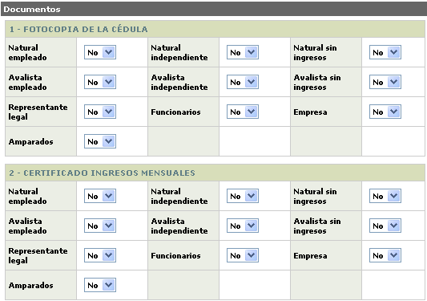
Actualizar: si el usuario selecciona un registro e invoca la opción Actualizar, se invoca un nuevo formulario en el cual los únicos campos modificables son Foto cliente, Motivo reposición, Realce nuevo y Anexos.
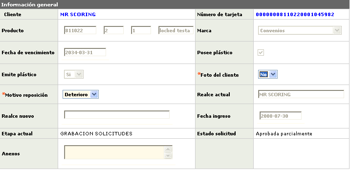
En la página de documentos, el usuario puede modificar para cada documento y para cada tipo de persona la indicación de Si o No el documento fue entregado.
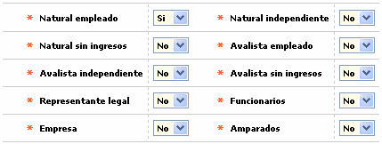
Detalle: si el usuario selecciona un registro correspondiente a la solicitud de reposición débito e invoca la opción Detalle, se despliega un wizard de dos pasos con la información completa de la solicitud y en el cual ninguno de sus campos es modificable.
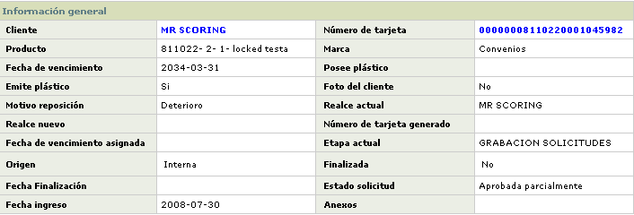
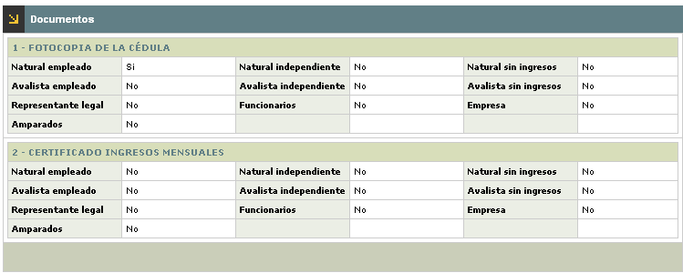
Renovación / Reexpedición débito : si el tipo de solicitud seleccionada por el usuario es Renovación o Reexpedición débito, la primera página del wizard contiene los siguientes campos.
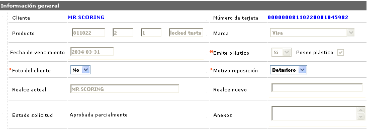
Descripción de campos
|
Cliente |
En este campo de salida se despliega el nombre del cliente titular de la tarjeta para la que se ingresa la solicitud. |
|
Número de tarjeta |
Campo de salida que muestra el número de tarjeta para la cual se ingresa la solicitud. |
|
Producto |
Este campo de salida muestra el bin, producto, grupo de afinidad y descripción del producto débito al que pertenece la tarjeta. |
|
Marca |
Campo de salida que despliega la marca a la que pertenece la tarjeta. |
|
Fecha de vencimiento |
En este campo de salida se muestra en formato YYYY-MM-DD la fecha de vencimiento actual de la tarjeta. |
|
Fecha de vencimiento asignada |
Cuando de acuerdo con los parámetros del producto la renovación o la reexpedición debe calcular fecha de vencimiento, una vez que la solicitud se encuentre aprobada totalmente, al consultar por el detalle se muestra la nueva fecha de vencimiento asignada. Durante el ingreso de la solicitud este campo siempre se muestra en blanco. |
|
Posee plástico |
En este campo de salida se indica Si, la tarjeta actual tiene un plástico emitido. |
|
Emite plástico |
Campo de salida que indica Si para el producto solicitado debe emitir un plástico como materialización de la tarjeta. |
|
Foto cliente |
En este campo obligatorio tipo combo se indicaSi o No el plástico de la tarjeta debe llevar impresa la foto del cliente. |
|
Estado de la solicitud |
Campo que muestra el estado actual de la solicitud, el cual al ingresar es Aprobada parcialmente. |
|
Número de tarjeta generado |
Si de acuerdo con los parámetros del producto la renovación debe generar un nuevo numero de tarjeta, (la reexpedición siempre genera nuevo número), una vez que la solicitud se encuentre aprobada totalmente, al consultar por el detalle se muestra el número de tarjeta asignado. Durante el ingreso de la solicitud este campo siempre se muestra en blanco. |
|
Fecha solicitud |
Campo de salida en formato YYYY-MM-DD que muestra la fecha de ingreso de la solicitud. |
|
Etapa actual |
Este campo de salida contiene la etapa actual en la que se encuentra la solicitud y que al ingreso de la misma siempre es Grabación solicitudes. |
|
Sucursal |
Campo de salida que muestra la sucursal de radicación de la tarjeta para la cual se ingresa la solicitud. |
|
Anexos |
En este campo alfanumérico de hasta 250 caracteres se pueden ingresar notas adicionales o importantes en relación con la solicitud. |
En la segunda página del wizard, se despliegan los diferentes documentos requeridos durante el ingreso de la solicitud y el usuario puede marcar para cada tipo de persona si el documento fue entregado o no.
Actualizar: si el usuario selecciona un registro e invoca la opción Actualizar, se invoca un nuevo formulario en el cual los únicos campos modificables son Foto cliente y Anexos.
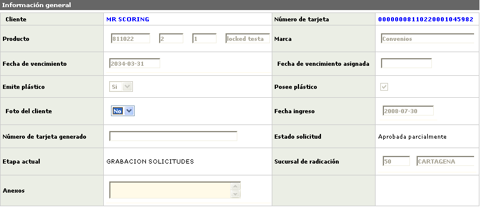
En la página de documentos, el usuario puede modificar para cada documento y para cada tipo de persona la indicación de Si o No el documento fue entregado.
Detalle: si el usuario selecciona un registro correspondiente a la solicitud de reposición débito e invoca la opción Detalle, se despliega un wizard de dos pasos con la información completa de la solicitud y en el cual ninguno de sus campos es modificable.
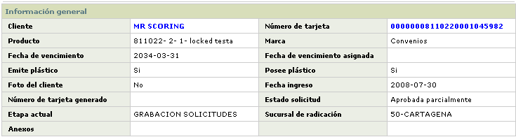
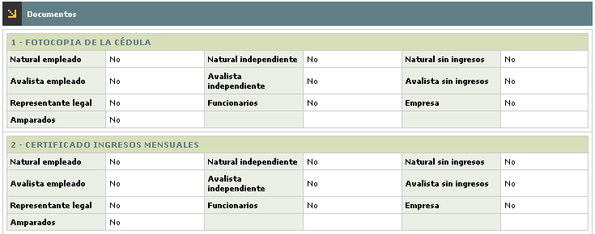
Consultar etapas : si el usuario selecciona una solicitud e invoca el hipervínculo Consultar etapas, se despliega un formulario que le permite ver el detalle de las diferentes etapas por las cuales ha avanzado la solicitud y el resultado obtenido en cada una de ellas.
El formulario contiene el hipervínculo Documentos requeridos que al ser invocado despliega otro formulario que le permite ver al usuario cuales son los documentos que de acuerdo con lo parametrizados para el tipo de solicitud y producto son requeridos en cada una de las etapas.
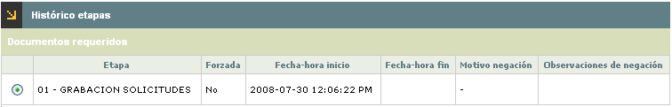
Descripción de campos
|
Etapa |
Campo que muestra el código y descripción de cada una de las etapas por las cuales ha avanzado la solicitud. |
|
Forzada |
En este campo se indica si el avance de la solicitud en cada etapa fue resultado del proceso normal o si por el contrario la solicitud se avanzó de manera forzada pasando por alto las validaciones propias de la etapa. |
|
Fecha hora inicio |
Campo que despliega la fecha y hora en la cual la solicitud arribó a cada una de las etapas. |
|
Fecha hora fin |
En este campo se muestra la fecha en la cual la solicitud fue avanzada a una etapa siguiente o terminó su trámite en cada una de las etapas. |
|
Motivo negación |
Si durante el avance de la solicitud en la etapa debido a las validaciones propias de la misma o a los filtros exitentes la solicitud fue negada, en este campo se muestra el motivo que justifica dicha negación. |
|
Fecha hora fin |
En este campo se muestran los comentarios u observaciones adiconales que complementan la explicación del motivo por el cual fue negada la solicitud. |
Documentos requeridos: si desde el histórico de etapas el usuario selecciona un registro e invoca el hipervínculo Documentos requeridos, se despliega un formulario en el que se relacionan los documentos que de acuerdo con los parámetros de solicitud por producto son requeridos en la etapa y así mismo se indica para cada documento si este fue o no entregado por el cliente.
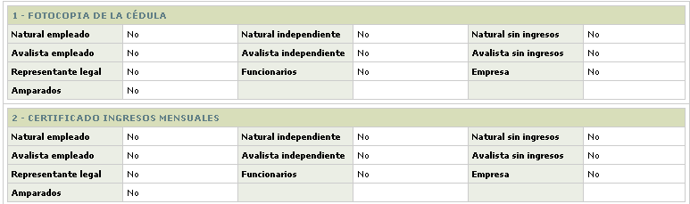